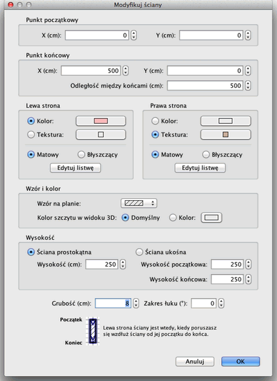

| Modyfikacja ścian | |||
| Możesz zmienić położenie i długość
ścian domu przy użyciu myszy lub poprzez pozycję menu
Plan > Modyfikuj ściany. Jeśli wybrana jest tylko jedna ściana na planie możesz zmienić jej wymiar przesuwając jej początek lub koniec. W trakcie ich przesuwania pojawi się wskaźnik przedstawiający aktualny wymiar ściany.
|

|
| Kiedy umieścisz kursor myszy ponad znacznikiem początku
lub końca wybranej ściany ulegnie on zmianie na symbol wskazujący
na możliwość przesunięcia. Gdy klawisz myszy jest
wciśnięty widoczna jest podpowiedź z długością
ściany. Ściana może być zmodyfikowana również w przypisanym jej oknie. Wystarczy dwukrotnie kliknąć ścianę na planie domu lub wybrać polecenie w menu Plan > Modyfikuj ściany... po jej uprzednim zaznaczeniu.  W oknie modyfikacj ścian możesz zmienić współrzędne
początku i końca ściany, kolor lub teksturę (oddzielnie
dla prawej i lewej strony ściany), grubość i wysokość. |
|